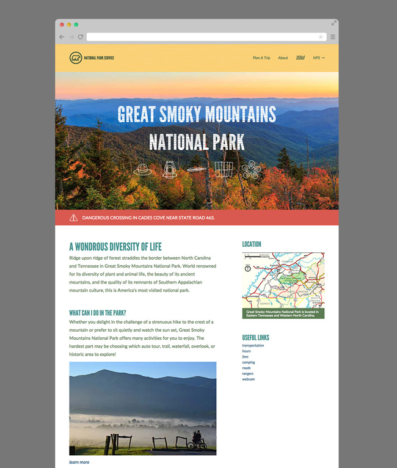
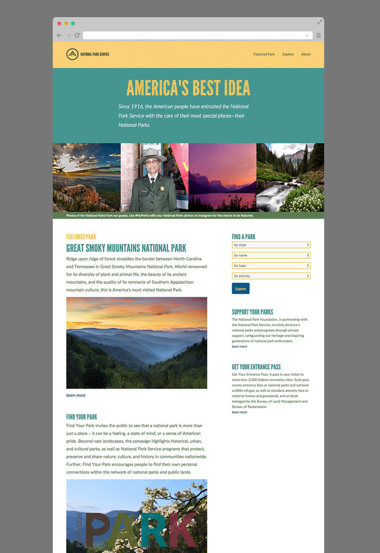

View the project live or view the code on Github.
This is the final project I completed for The Iron Yard. I had two weeks to take this project from research and discovery to the final live, coded version. I redesigned the main page of the National Park Service website and four pages of the Great Smoky Mountains National Park website. You can access the pages I redesigned for the Smokies by clicking "featured park" in the header of the National Park main page.
The National Park Service is facing a problem of an aging visitor base. I had three goals for this project.
Research: wordlist, SWOT analysis, competitive market study, website analysis, sketches, wireframes, styletiles, and comps.
Technology: RWD, HTML, Sass, Typekit, Bourbon, JS, Modernizr, Photoshop, Illustrator.
The main challenge I faced was making a government website feel trustworthy and authoritative while simultaneously feeling friendly and inviting. I achieved this through a consistent grid, the typefaces used, and the colors used. Another challenge I faced was designing the kids page for Great Smoky Mountains National Park. I needed to design it for kids (which is very different than designing for adults) and have it feel cohesive with the rest of the site. I accomplished this through using the same colors, typeface for body copy, and header and footer.
 